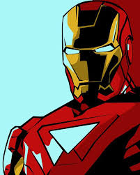
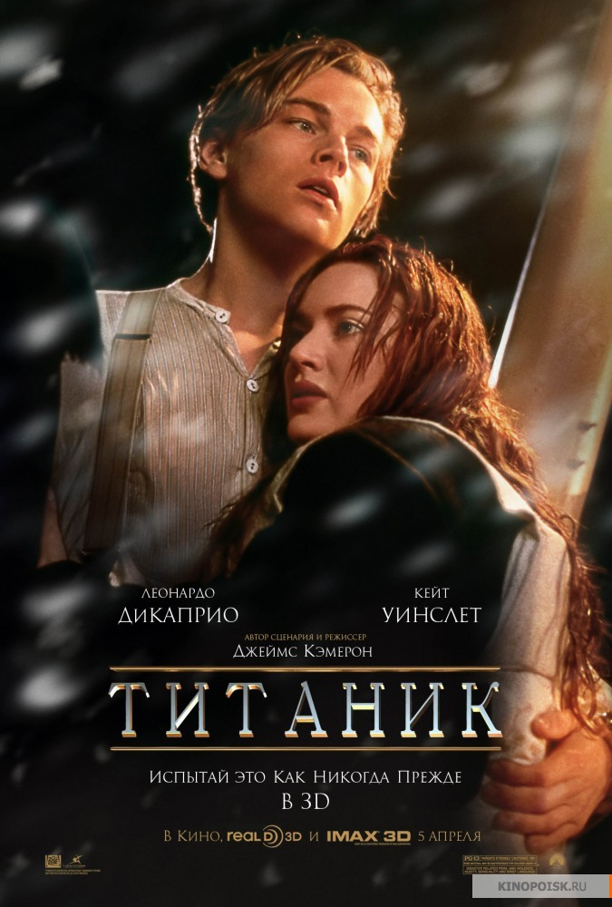
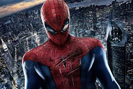

| IMAGE |
| GENRE | Release Date | Short description |
|  |
Iron Man | Superhero | May 2, 2008 | A billionaire industrialist and genius inventor, Tony Stark (Robert Downey Jr.), is conducting weapons tests overseas, but terrorists kidnap him to force him to build a devastating weapon. Instead, he builds an armored suit and upends his captors. Returning to America, Stark refines the suit and uses it to combat crime and terrorism. |
|  |
Titanik | drama | December 19, 1997 | James Cameron's "Titanic" is an epic, action-packed romance set against the ill-fated maiden voyage of the R.M.S. Titanic; the pride and joy of the White Star Line and, at the time, the largest moving object ever built. She was the most luxurious liner of her era -- the "ship of dreams" -- which ultimately carried over 1,500 people to their death in the ice cold waters of the North Atlantic in the early hours of April 15, 1912. |
|  |
Spider man | Action | May 3, 2002 | "Spider-Man" centers on student Peter Parker (Tobey Maguire) who, after being bitten by a genetically-altered spider, gains superhuman strength and the spider-like ability to cling to any surface. He vows to use his abilities to fight crime, coming to understand the words of his beloved Uncle Ben: "With great power comes great responsibility." |
 |
Batman | Action, Adventure | June 15. 2005 | A young Bruce Wayne (Christian Bale) travels to the Far East, where he's trained in the martial arts by Henri Ducard (Liam Neeson), a member of the mysterious League of Shadows. When Ducard reveals the League's true purpose -- the complete destruction of Gotham City -- Wayne returns to Gotham intent on cleaning up the city without resorting to murder. With the help of Alfred (Michael Caine), his loyal butler, and Lucius Fox (Morgan Freeman), a tech expert at Wayne Enterprises, Batman is born. |